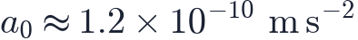
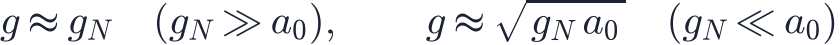
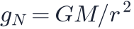
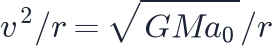
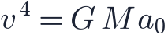
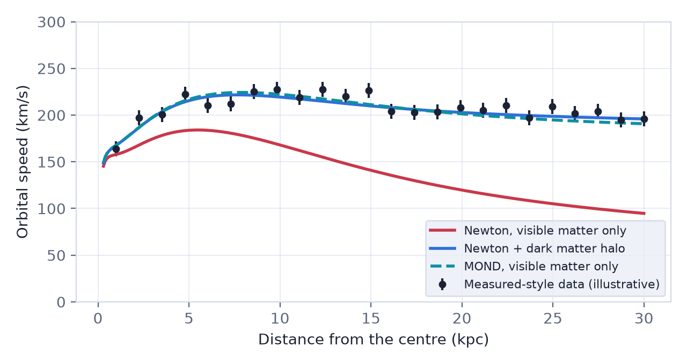
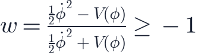
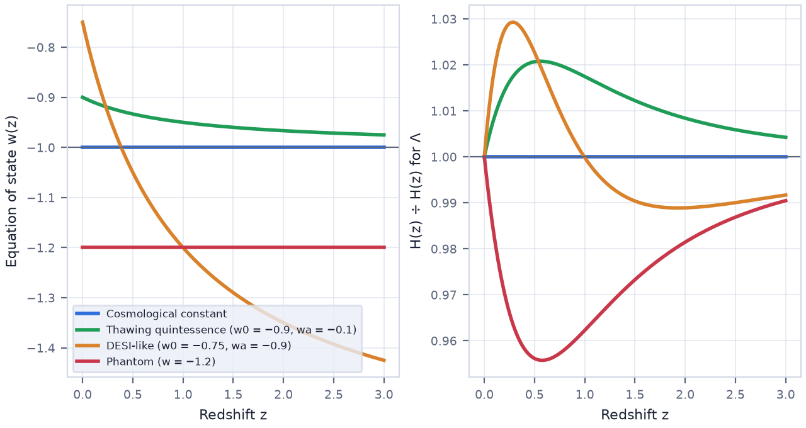
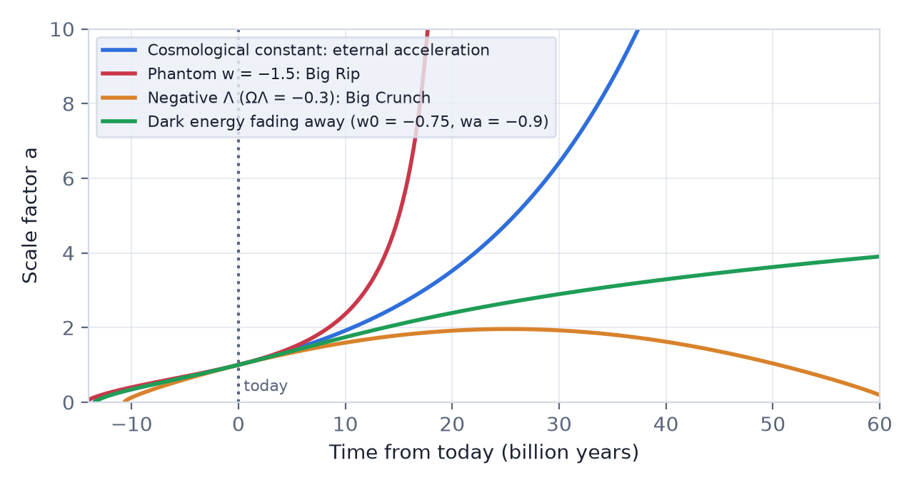

In this lesson you will learn
|
Why look for alternatives?
ΛCDM needs two ingredients we have never detected in a laboratory: cold dark matter and dark energy. Together they make up 95% of the universe. It is healthy, and scientifically necessary, to ask whether the evidence could be explained differently. There are two broad strategies:
- Change the ingredients: keep general relativity, but replace Λ by something else.
- Change the law: keep only the matter we see, but modify gravity.
MOND: Modified Newtonian Dynamics
In 1983 Mordehai Milgrom proposed that Newton's law changes at extremely small accelerations. Below a new constant of nature

the true gravitational acceleration becomes larger than the Newtonian value :

This is MOND. Far from a galaxy's centre,

and circular orbits have
, so
MOND's successes
|

Try it: Galaxy Rotation Curve Tick "Use MOND instead of dark matter" in the rotation curve simulator. The visible matter alone now explains the flat curve. |
MOND's problems
|
MOND is therefore considered successful as a description of galaxies but incomplete as a cosmology. Why galaxies follow its simple rule so closely is still an interesting open question for dark matter models.
Modifying general relativity
Another idea is to change gravity on the largest scales so that the universe accelerates without dark energy. Examples include:
- f(R) gravity, which replaces the curvature term in Einstein's equations by a function of it;
- scalar–tensor theories (such as the Horndeski family), which add a new field coupled to gravity;
- massive gravity and braneworld models (e.g. DGP), in which gravity weakens at large distances.
These theories must reproduce general relativity precisely in the Solar System, where it is tested to extraordinary accuracy. Many achieve this with screening mechanisms that hide the modification in dense environments.
A single event pruned the field Many modified-gravity theories predicted that gravitational waves travel at a speed different from light on cosmological scales. The neutron star merger GW170817 (lesson L6.5) showed the two speeds agree to one part in , ruling out large classes of these models within days of the announcement in 2017. |
Surveys now test gravity by comparing two things general relativity links tightly: the expansion history and the growth of structure measured through redshift-space distortions and weak lensing. A mismatch would be a signature of modified gravity.
Quintessence: dark energy that evolves
If dark energy is not a constant, the simplest alternative is quintessence: a slowly rolling scalar field, similar to the inflaton (lesson L6.3) but active today. Proposed by Bharat Ratra and Jim Peebles and by Christof Wetterich in 1988, it has an equation of state

- Thawing models: the field was frozen with and has recently started to roll, so rises above −1 today.
- Freezing models: the field rolled in the past and is slowing down towards .
Observations are usually summarised with the parameterisation (lesson L6.2).

Phantom energy and the Big Rip
If , dark energy is called phantom. Its density increases as space expands. The expansion rate diverges in a finite time, pulling apart galaxy clusters, galaxies, planets and finally atoms: the Big Rip. For it would happen about 22 billion years from now. Simple scalar fields cannot produce without instabilities, so phantom behaviour would be a sign of more exotic physics.

The fate of the universe therefore depends on the nature of dark energy: eternal acceleration for a cosmological constant, a Big Rip for phantom energy, and even a Big Crunch if dark energy were to fade away or turn negative.
What the data say Supernovae, BAO and the CMB together find within about 5% of −1 if it is constant. In 2024 and 2025 the Dark Energy Spectroscopic Instrument (DESI), combined with the CMB and supernovae, found a preference, at the level of roughly three to four standard deviations depending on the supernova sample, for evolving dark energy with and . Dark energy would then have been stronger in the past and weakening today. This is one of the most closely watched results in cosmology; Euclid, Rubin and further DESI data will test it. |
Try it: Build Your Own Universe Load the "Evolving dark energy (DESI-like)" and "Phantom" presets in the universe builder. Compare their histories, fates and report cards with ΛCDM. |
How to choose between models
Cosmologists compare models using criteria like these:
- Fit to all data at once, not just one observation.
- Simplicity: extra parameters must improve the fit enough to be justified (formally via Bayesian evidence or information criteria).
- Predictions: a good model predicts new observations before they are made, as ΛCDM predicted the BAO scale and the CMB polarisation.
- Physical consistency: no instabilities, no conflict with laboratory or Solar System tests.
By these criteria ΛCDM remains the standard model, but the door is open: the Hubble and S8 tensions (lesson L6.6) and the DESI hints are precisely where alternatives are being tested.
Remember this
|